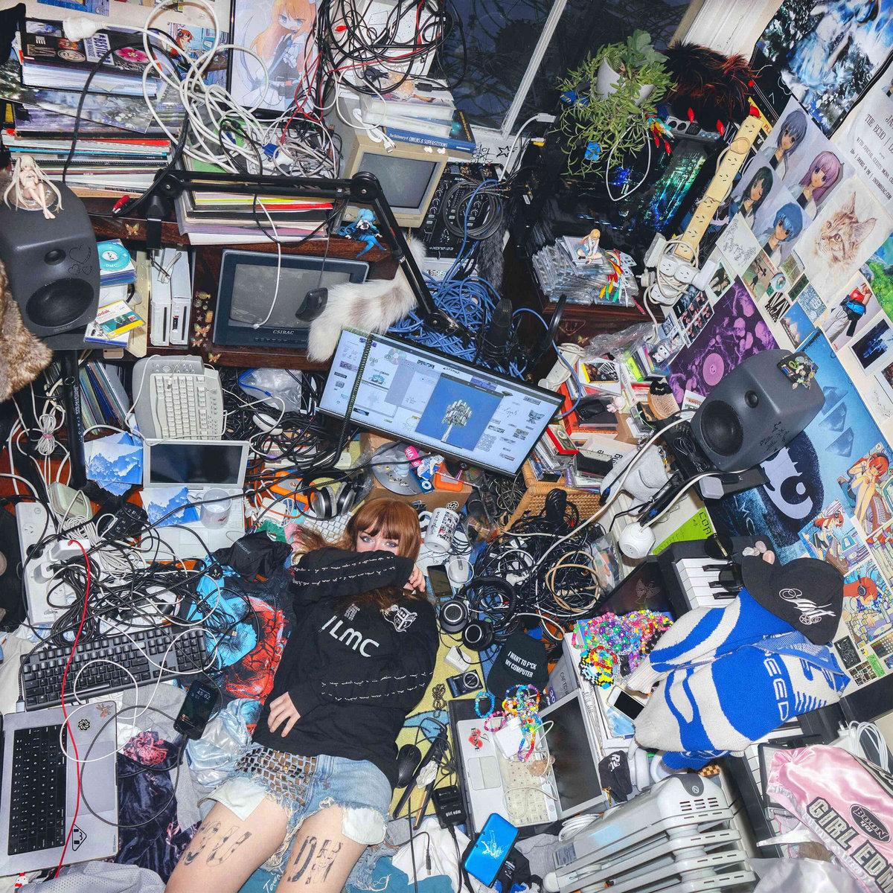
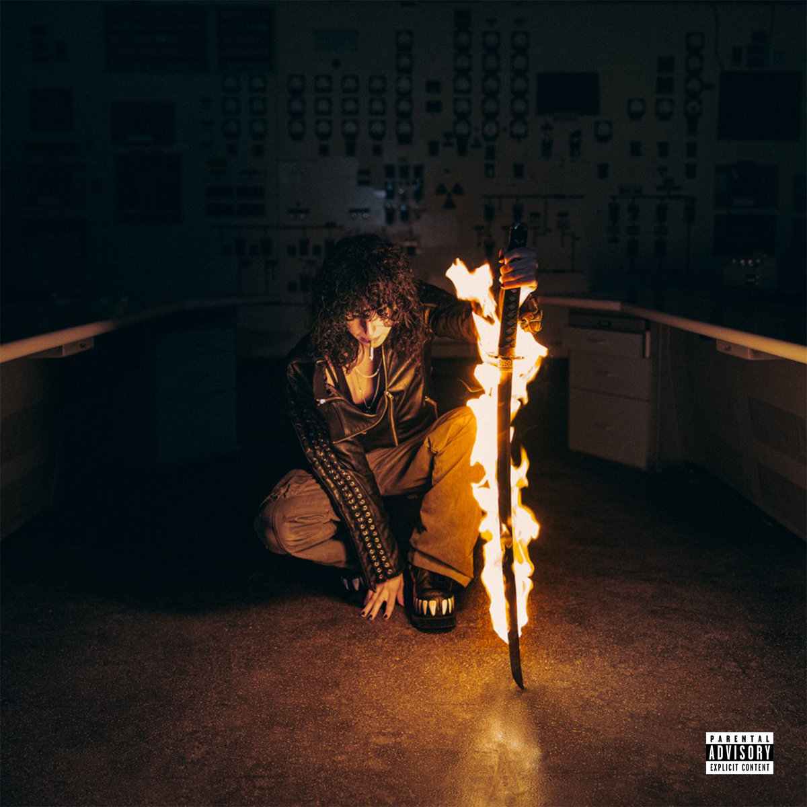
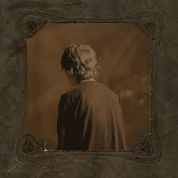

i love my computer too AND i love jirachi the pokemon (seeing her in july :3).
infohazard, ipod touch

i got called performative so much for this but she's peak so
also no skips on this album
TURN UP OR DIE, Dancing with your eyes closed

yucky image quality but I couldn't find a better one :(
also got called performative for this but man this is such a good mix of her previous EP and album's sound
Nettles, Tempest